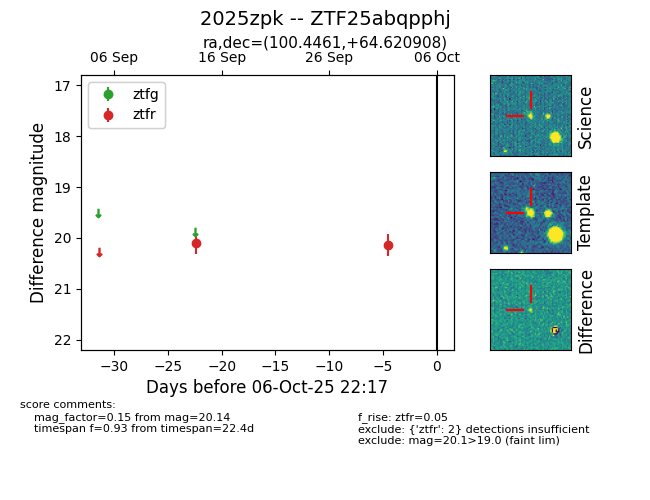

FINK: ZTF25abqpphj
Lasair: ZTF25abqpphj
ALeRCE: ZTF25abqpphj
TNS: 2025zpk
YSE: 2025zpk
ZTF25abqpphj (ztf,fink)
2025zpk (tns,yse)
equatorial (ra, dec) = (100.4461,+64.62091)
galactic (l, b) = (150.7283,+23.32306)

last ztfr=20.14
2 ztfr detections